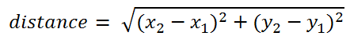
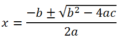
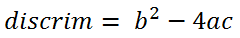
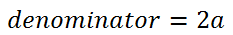
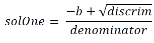
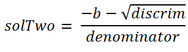

Math Functions Programs:
Each of these programs can be solved using one of the
Math functions:
Math.round(double)
Math.pow(double,double)
Math.max(double,double)
Math.min(double,double)
Math.sqrt(double)
1) CircleArea: This program will get a
circle’s radius from the user, and calculate the area of the circle. Use the
formula π*r2. Use Math.pow to calculate the power and 3.14159 for
Pi.
For example:
Please enter the radius of a circle:
12
The area of a circle with a radius of 12 is 452.38896
2) LargerOf2: This
method will take in 2
ints from the user and return the larger of the two. Use Math.max to achieve
this.
For Example:
Please enter a number:
8
Please enter another number:
16
The larger number is 16.
3) SmallestOf3: This method will take in
THREE ints from the user and find the smallest of them. Math.min does not take
in three values, so use the following method.
First find the smaller of the first two numbers and
store it into an int smallNum. Then take smallNum and the third value and find the
smaller of those. In the end that should be the smallest of all three.
For Example:
Please enter the first number:
8
Please enter the second number:
2
Please enter the third number:
4
Out of 8, 2, and 4 the smallest number is 2
4) Distance: The Distance formula is used to find the distance
between two coordinates (x1,y1) and (x2,y2)


Ask the user to enter values for a, b, and c. Order
of operations is important, so use the following method:
Calculate the value under the square root symbol and
store it into a variable named discrim. Don't forget that
just putting ac will not multiply a times c. Use an
asterisk for every multiplication.

Multiply 2a and store it into a variable named
denominator.

There are TWO solutions to this equation. One where you add, and one where you subtract. Don't forget to use parentheses to surround the top of the fraction.


For Example:
Please enter the value of a:
2
Please enter the value of b:
4
Please enter the value of c:
-5
The two solutions are 0.87... and -2.8...
WARNING: Not all combinations of a, b, and c will give you a real number ( for example: a =1, b=2, and c=3 doesn't work).
Test your program with the following:
| a | b | c | Solutions |
| 1 | -12 | -28 | 14 and -2 |
| -12 | 5 | 2 | .66666 and -0.25 |
| 1 | 22 | 121 | -11 and -11 |